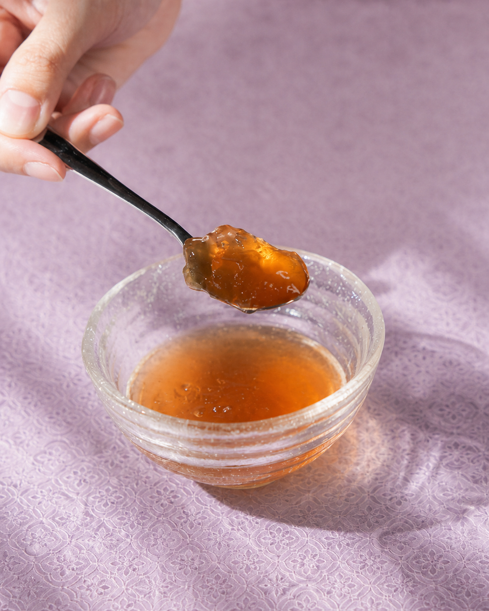

Traditional Extraction
A slow extraction process with no water added.
A slow extraction process with no water added.
Taiwanese Silkie chicken is the only ingredient.
Learn about the ingredients and breed characteristics.

Texture can change naturally with temperature.
Refer to the product label for ingredients and nutrition information.
Food-safety management guides every pouch.
Managed from ingredients through finished goods.
A controlled process supports storage stability.
Reports will be shared by production batch.